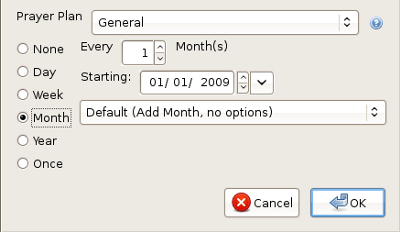

Prayer Plan Settings
This topic will help you set
Prayer Plan
Settings for an entry.
The following are ways to set an entry's Prayer Plan settings:
- From the file menu, choose Prayer Plan Settings.
- While the mouse curser is over the entries list, from
context menu (usually the right mouse button), choose Prayer
Plan Settings.
- Click the toolbar button.

By default, each entry in your journal
has its Prayer Plan Settings set to "None." This means the journal
entry will never appear in any Prayer Plan unless you change its
Prayer Plan Settings. The first thing you should do is choose which
Prayer Plan the entry will show up in by selecting it from the
drop-down list.
You can setup an entry to display in a Prayer Plan daily. You
can determine how many days you want in between the times it shows up.
And, like every option, you can specify when the settings will begin.
The default is the day you setup the entry's settings.
Next,
you can set any entry to display weekly. Just like daily, you can set
how many weeks you want in between the times it shows up. You can also
set what day(s) during the week the entry will show up.
For
monthly, you have several options. The first option is to have the
entry show up on a Prayer Plan monthly like weekly and daily.
You can specify how many months will be in between each month and, of
course, the start date. The other options are: "Last Day of Month",
"First Day of Month", "First Week of Month", "Second Week of Month",
"Third Week of Month" and "Fourth Week of Month." For each week of the
month, you can specify which day of that week it should show up.

Next,
you have the option to setup an entry to show up in years. This is
usefull for such things as someone's birthday. Like the other options,
you can set how many years between the times it shows up and you can
set the starting date.
Finally,
you have the option to setup an entry to show up once. This is
usefull for such things as someone's surgery. For this setting, you
just need to specifiy what day the entry should show up in a Prayer
Plan.